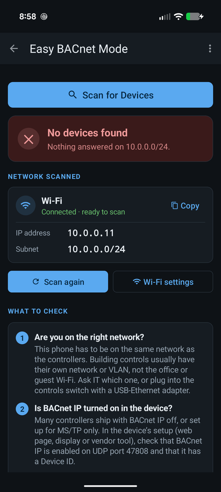

Why can't I find my BACnet IP devices when I scan?
Updated 3 October 2026
Because the Who-Is broadcast is not reaching the devices. A scan only reaches equipment on the same IP subnet as your phone, so the first thing to rule out is that you are on the office or guest network instead of the controls network. After that, in order: the Wi-Fi is dropping or blocking broadcasts, the devices use a non-standard UDP port, or a firewall is blocking 47808. A scan that finds nothing at all is a network problem. The devices themselves are rarely the cause.

Check these in order
1. Is the phone on the controls network?
Broadcasts do not cross routers, so your phone has to be on the same subnet as the controllers. When a scan finds nothing, Easy BACnet shows the phone's own IP address and subnet mask. Compare it with a controller's address (on its label, in its front-panel menu, or in the hand-over documents). With a 255.255.255.0 mask the first three numbers must match: a phone on 192.168.1.20 can find a controller on 192.168.1.50 but not one on 10.20.30.50.
If they do not match, you are on the wrong network. Guest Wi-Fi and the office
network are the usual culprits; controls normally sit on their own network or VLAN.
An address starting 169.254 means no DHCP server answered and the phone
made one up, which is common when you plug straight into a controls switch. See
what is a subnet, and why doesn't the switch give me the
right one? for how to get onto the right one.
If Wi-Fi shows Connected, no internet, turn mobile data off and scan again. Android can route traffic over mobile data when the Wi-Fi has no internet access.
2. Is the network blocking the broadcast?
Wi-Fi access points drop broadcast frames under load, and guest or corporate Wi-Fi often has client isolation on, which stops wireless clients reaching other devices at all. Easy BACnet re-sends Who-Is throughout the scan, and if nothing answers it contacts each address on the subnet directly. If devices turn up that way, the scan summary says they only answered when contacted directly: the network is blocking broadcast replies, and other BACnet tools on that Wi-Fi will see nothing. The fix is a wired connection (a USB-Ethernet adapter into the controls switch) or a network that allows the traffic.
3. Are the devices on a non-standard port?
The standard is UDP 47808 (0xBAC0). Sites that run more than one BACnet network over the same wire put the others on 47809, 47810 and up. Easy BACnet checks the common alternates during a scan, but a device on an unusual port can be added with Add device by IP… and the right port typed in.
4. Is a firewall or access list in the way?
A switch or router access list can block UDP 47808 between VLANs even when addressing is correct. Phones have no host firewall to worry about, so if the first three checks pass this is a question for whoever runs the network.
If you find some devices but not others
- They are on another segment. The ones you found are on your subnet; the missing ones are behind a router. Add a known one by IP, or scan through the site's BBMD (below).
- They are MS/TP devices behind a router that is not forwarding. MS/TP devices normally answer a Who-Is through their router, with a network number and MAC address instead of a plain IP. If a whole trunk is missing, the router or the trunk is the problem, which is a controls question.
- The missing device is off or unplugged. Check power and the link light before anything else.
- Two devices share a Device ID. One of them can appear to vanish, or the two swap places between scans. The scan summary warns about duplicates. See duplicate Device IDs.
If devices appear with no name or no points
The device answered discovery but is failing property reads. Give a large controller a minute, then back out and open it again. If it still shows nothing, it may be busy, it may only serve its object list in a form the client cannot read, or it may be an unconfigured unit still on the factory-default Device ID (the scan flags these as needs commissioning).
Reaching devices on another subnet
Two options in the menu (three dots, top right):
- Add device by IP… contacts one controller directly at an address you know. It works across routers because it is not a broadcast. See add a device by IP.
- BBMD for remote networks… registers the phone with the site's BBMD so scans reach the subnets it serves. You need the BBMD's address from whoever manages the controls network. See what is a BBMD?